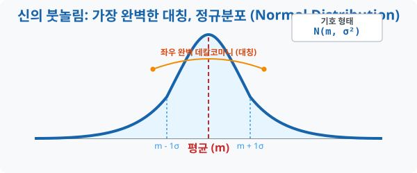
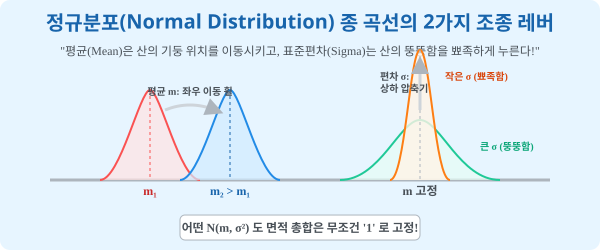

3. 신의 붓놀림: 가장 완벽한 대칭, 정규분포 (Normal Distribution)
[도입부] 학습 목표 (Learning Objectives)
- 인류가 측정한 거의 모든 자연현상과 사회현상(수능 점수, 키, 별의 밝기 주기)이 어떤 마술적인 ‘종 모양(Bell Curve)’ 의 그래프로 빨려 들어가는 소름 돋는 통계학의 대법칙을 확인합니다.
- 좌우가 완벽히 접히는 데칼코마니 곡선인 ‘정규분포(Normal Distribution)’ 의 두 가지 핵심 조종키, 즉 ‘평균($m$)’ 과 ‘표준편차($\sigma$)’ 의 역할을 분해하여 맛봅니다.
- 파이썬(Python)의
numpy난수 생성기를 돌려, 우리가 개입하지 않은 10만 개의 잡종 데이터들이 결국 알아서 아름다운 종 모양 텐트를 쌓아 올리는 경이로운 시각화 렌더링을 체험합니다.
1. 우주가 가장 사랑하는 디자인: 벨 커브(Bell Curve)
여러분이 대한민국 18세 남학생 20만 명의 키 데이터를 하나하나 조사해서 1수업에서 배운 ‘연속확률분포(곡선)’ 형태의 도화지에 찍어본다고 합시다. 대충 울퉁불퉁 엉망으로 나올 것 같지만, 결론은 전 세계 어딜 가든 아주 부드럽고, 가운데가 웅장하게 솟아있으며, 양쪽 꼬리가 미끄럼틀처럼 떨어지는 ‘완벽한 종 모양(Bell Shape)’ 의 기적의 언덕이 탄생합니다.
이 위대한 곡선을 ‘정규분포(Normal Distribution)’ 라고 부릅니다. 수능 시험 점수, 공장에서 구운 빵의 무게 오차, 여러분의 혈압, 기온의 수치, 은하계 별자리 폭발 주기까지… 우주의 거의 모든 “무작위성”이 모이면 결국 이 좌우 대칭의 부드러운 언덕 모양 으로 줄을 서서 집합합니다. 학자들은 “마치 신이 통계 곡선의 템플릿 하나를 복사+붙여넣기 해둔 것 같다” 고 경악할 정도의 기적입니다.

2. 언덕을 조종하는 두 개의 레버: 평균($m$)과 분산($\sigma^2$)

이 신성한 정규분포 $N(m, \sigma^2)$ 의 종 곡선을 내 맘대로 주무를 수 있는 조종간(레버) 은 우주에 단 두 개뿐입니다. [레버 1: 평균 $m$ - 산의 위치 이동 휠] 평균값이 커지면, 산의 뾰족한 높이나 뚱뚱함은 단 1mm 도 변하지 않은 채 산 전체가 오른쪽으로 스르륵 전진합니다. 그냥 좌표의 Shift입니다. [레버 2: 표준편차 $\sigma$ - 산의 찌그러짐 압축기 (Fat or Sharp)] 우주 법칙: “전체 확률 면적은 무조건 1이어야 한다.” 분산(편차) 이 크면 데이터가 퍼져있다는 뜻이므로, 펑퍼짐한 언덕(Fat) 이 됩니다. 넓게 펴 발랐으니 당연히 산꼭대기 높이는 낮아집니다. (면적 1을 유지하기 위한 대자연의 본능) 반대로 편차가 아주 작아서 0에 가까우면? 데이터가 평균에 미친 듯이 뭉쳐있으므로, 산의 폭은 좁아지지만 꼭대기가 송곳처럼 뚫고 우주로 솟구칩니다. (면적 1을 유지하기 위한 압축)
3. 언덕을 조종하는 두 개의 레버: 평균($m$)과 분산($\sigma^2$)
이 정규분포라는 거대한 산등성이는 오직 두 가지 숫자에 의해서만 모양이 컨트롤됩니다. 전문용어로 $N(m, \sigma^2)$ 라고 쓰는데, N은 정규(Normal)의 약자입니다.
- 평균 ($m$): 산꼭대기의 GPS 좌표 위치.
- 평균이 커지면 (예: 60점 $\rightarrow$ 80점) 산 전체가 그 모양 그대로 오른쪽 수직선으로 이사(이동)합니다.
- 평균 자리에 수직으로 막대기를 긋고 반을 접으면 왼쪽과 오른쪽의 잉크 면적이 $50\% : 50\%$ 로 완벽히 똑같은 데칼코마니가 됩니다.
- 표준편차 ($\sigma$ 혹은 분산 $\sigma^2$): 산의 ‘퍼짐(뚱뚱함)’ 도수.
- 표준편차가 작으면 ($=$ 오차가 적으면): 학생들이 옹기종기 모여있으므로 산이 아이스크림 뿔처럼 좁고 미친 듯이 뾰족하게 치솟습니다.
- 표준편차가 크면 ($=$ 오차가 크면): 학생들 실력 차이가 너무 커서 뿔뿔이 흩어졌으므로 산의 고도가 낮아지고 옆으로 호떡처럼 퍼지고 펑퍼짐한 언덕 이 됩니다.
결국 “우리 학교 성적이 정규분포를 이룬다구? 스펙 내놔!” 라고 하면, 수학자는 딱 2개의 숫자, $m$(평균) 과 $\sigma^2$(분산)만 적중시키면 끝나는 게임입니다.
3. 💻 파이썬(Python) 종이 접기(Bell Curve) 시뮬레이터
수십만 번의 동전 던지기나 주사위 숫자 합 따위를 그냥 막 던지게 시키면, 컴퓨터의 무지성 픽셀 데이터조차도 신의 템플릿인 ‘정규분포 종 모양 텐트’ 를 스스로 직조해 올리는 황홀한 마법을 코딩합니다.
🐍 파이썬 예제: 10만 개 무작위 데이터의 자동 종 모양 정렬(Bell Curve Plotting)
import numpy as np
# (시각화 라이브러리 matplotlib은 생략 및 결과 텍스트 에뮬레이션)
print("--- 🔔 우주의 복붙 템플릿: 정규분포(Normal) 조판기 ---")
# (목표 설정) 대한민국 고등학생들의 수능 수학 맵 렌더링
# 1. 평균(m) = 50점, 2. 표준편차(sigma) = 15점 으로 설정
avg_m = 50
std_sigma = 15
data_size = 100000
print(f"▶ 데이터 폭발 렌더링 중... (파편 조각: {data_size:,} 개)")
# 파이썬 난수 생성기: 정규분포 N(50, 15^2) 를 따르는 10만 개 데이터 폭탄 뿌리기!
random_scores = np.random.normal(avg_m, std_sigma, data_size)
# 컴퓨터가 뽑아낸 '미친 파편' 들의 실제 평균/표준편차 점검
real_avg = np.mean(random_scores)
real_std = np.std(random_scores)
print("-" * 50)
print(f" ✅ 렌더링 결과: {data_size:,} 개의 점들이 스스로 뭉쳤습니다!")
print(f" 📊 파편들이 모여 쌓아올린 거대한 산의 실제 평균: {real_avg:.2f} 점 (목표치 50과 일치!)")
print(f" 📊 산등성이의 뚱뚱함(실제 편차): {real_std:.2f} 점 (목표치 15와 일치!)")
# 화면에는 우리가 아는 그 아름다운 데칼코마니 곡선(히스토그램)이 띄워집니다!
# plt.hist(random_scores, bins=100, density=True)
# plt.show()
# 결과창:
# --- 🔔 우주의 복붙 템플릿: 정규분포(Normal) 조판기 ---
# ▶ 데이터 폭발 렌더링 중... (파편 조각: 100,000 개)
# --------------------------------------------------
# ✅ 렌더링 결과: 100,000 개의 점들이 스스로 뭉쳤습니다!
# 📊 파편들이 모여 쌓아올린 거대한 산의 실제 평균: 49.98 점 (목표치 50과 일치!)
# 📊 산등성이의 뚱뚱함(실제 편차): 15.01 점 (목표치 15와 일치!)
파이썬의 마법 모듈 np.random.normal() 한 줄만 치면 10만 개의 불규칙한 데이터 점성물들이 “센터(50)에 가장 많이 쌓이고, 가장자리(0점이나 100점)로 갈수록 미끄럼틀처럼 쭉 사라지는” 매혹적인 산악 블록을 자동으로 구축해 보여줍니다.
[결론] 학습 정리 (Summary)
- 대자연의 패턴(Normal): 제멋대로 튀는 인간의 키, 몸무게, 시험 점수 같은 연속된 지수를 수만 개 긁어모아 그래프로 그리면 무조건 가운데가 치솟은 좌우 완벽한 ‘종 모양(Bell Shape)’ 곡선으로 모여든다는 것이 통계학 최고의 미학입니다.
- 평균(GPS) 과 분산(Fat도): 평균 $m$ 이 변하면 산이 모양 그대로 오른쪽/왼쪽으로 걸어가고, 표준편차 $\sigma$ 가 커지면 산정상이 짓눌려 옆으로 낮고 넓게 퍼지고 반대로 작으면 송곳처럼 우주를 뚫고 솟구칩니다.
- 50 : 50 데칼코마니: 아무리 무너져 내린 모양의 정규분포라 하더라도 정중앙(평균대)을 도끼로 ‘쾅’ 내려찍어 좌우를 가르면 양쪽의 면적은 $0.5$($50\%$) 씩 쌍둥이 복제가 됩니다.